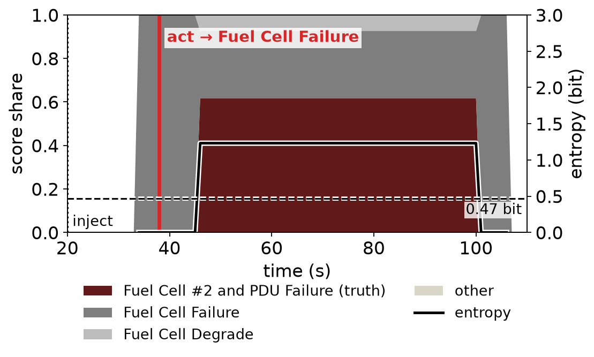
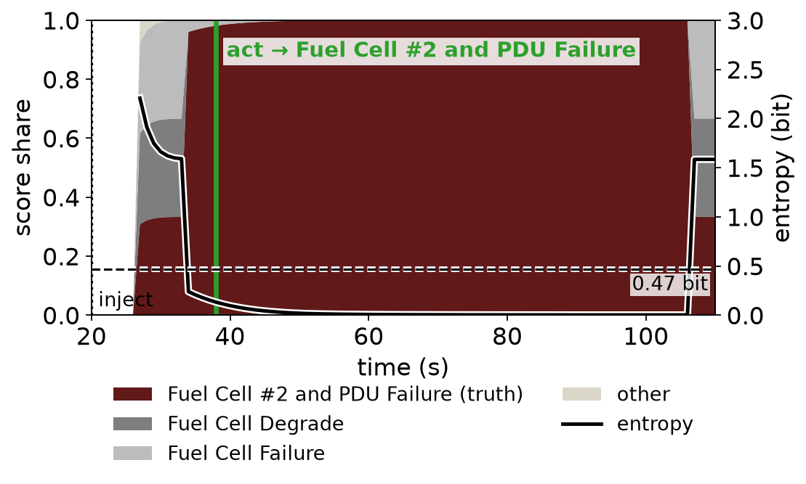

Scenario 10: Fuel Cell #2 and PDU Failure · area = score share, black line = entropy, dashed = threshold

Early symptoms match only “Fuel Cell Failure” → entropy stays 0 for the full window → gate opens. The true fault’s symptoms appear later (≈ 45 s).

Trajectory shape separates the fuel-cell faults: entropy falls from ≈ 2 bit to ≈ 0 on the true fault.